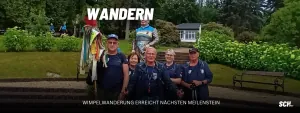

← Alle News der Abteilung Wandern

22.06.26
+++ Wimpelwanderung erreicht nächsten Meilenstein +++
Wimpel erreicht 34. Thüringer Wandertag – Gemeinsam auf dem Weg nach Oberwiesenthal
Schritt für Schritt dem großen Ziel entgegen
Unsere Wimpelwandergruppe der Wanderabteilung hat am 20. Juni ein weiteres wichtiges Etappenziel auf dem Weg zum 123. Deutschen Wandertag in Oberwiesenthal erreicht. Hinter unseren Wanderfreunden liegen bereits zahlreiche Kilometer, beeindruckende Landschaften und viele unvergessliche Begegnungen. Die jüngste Etappe führte durch den Thüringer Wald – eine der schönsten Wanderregionen Deutschlands. Dabei standen unter anderem Stationen am Großen Inselsberg sowie beim Deutschen Wandertag in Bad Tabarz auf dem Programm.
Wandern verbindet Menschen
Besonders beeindruckend ist immer wieder zu erleben, wie das Wandern Menschen zusammenführt. Egal ob aus Thüringen, Sachsen, Hessen oder anderen Regionen Deutschlands – auf den Wegen entstehen Gespräche, Freundschaften und gemeinsame Erinnerungen. Genau diese Verbundenheit spiegelt auch das Motto des 123. Deutschen Wandertages wider: „Bewegt verbunden – Gemeinsam durch das Erzgebirge“. Im September 2026 werden in Oberwiesenthal mehrere Tausend Wanderfreunde aus Deutschland und ganz Europa erwartet. Erstmals findet der Deutsche Wandertag dabei gemeinsam mit der internationalen EURORANDO statt, einem der größten Wanderereignisse Europas. Damit wird das Erzgebirge für einige Tage zum Treffpunkt der europäischen Wandergemeinschaft.
Jeder Kilometer erzählt eine Geschichte
Unsere Wimpelwanderung ist weit mehr als nur eine sportliche Herausforderung. Sie steht für Gemeinschaft, Tradition und die Freude an der Bewegung in der Natur. Mit jedem zurückgelegten Kilometer wird der symbolische Wimpel ein Stück näher an sein Ziel gebracht. Auch wenn bereits einige Etappen erfolgreich gemeistert wurden, liegt bis Oberwiesenthal noch ein gutes Stück Weg vor unserer Wandergruppe. Doch wer die Begeisterung und den Zusammenhalt unserer Wanderfreunde erlebt, weiß: Dieses Ziel wird Schritt für Schritt erreicht werden.
Mitwandern ausdrücklich erwünscht
Die Wimpelwanderung lebt von der Gemeinschaft. Deshalb sind alle Wanderfreundinnen und Wanderfreunde herzlich eingeladen, unsere Gruppe auf den kommenden Etappen zu begleiten. Ob für einige Kilometer oder einen ganzen Wandertag – jede Mitwanderin und jeder Mitwanderer ist willkommen. Gemeinsam unterwegs zu sein, die Natur zu genießen und neue Menschen kennenzulernen – genau das macht den besonderen Reiz dieser Reise aus.
Wir wünschen unserer Wanderabteilung weiterhin viele schöne Begegnungen, bestes Wanderwetter und unvergessliche Momente auf dem Weg zum Deutschen Wandertag 2026 in Oberwiesenthal.
Unsere nächsten Etappen
Mittwoch, 24.06.2026
Grenzadler Oberhof – Schmücke/Bahnhof Rennsteig
10 bzw. 17 km
Samstag, 27.06.2026
Masserberg – Siegmundsburg
10 km
Donnerstag, 02.07.2026
Königshof – Dreifreistaatenstein
10 km